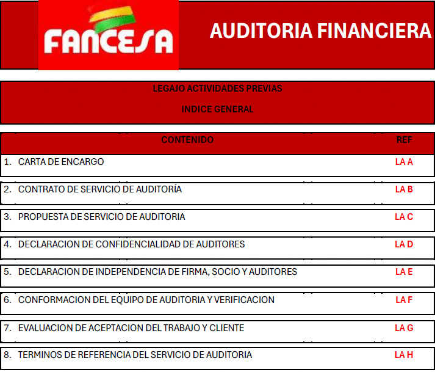

Estructura de Auditoría Financiera
Metodología organizada mediante legajos normativos para asegurar la máxima transparencia.

Legajo Previo
Contiene la documentación de planificación preliminar, correspondencia inicial, evaluación de riesgos inicial y los términos del compromiso de auditoría.

Legajo Permanente
Documentación de vigencia plurianual: estatutos legales, estructura organizativa, manuales de funciones internos, contratos a largo plazo y sistemas de control interno.

Legajo de Ejecución
Compilación de los papeles de trabajo que evidencian las pruebas analíticas, hallazgos sustantivos, hojas de observaciones y la base técnica para el dictamen final.